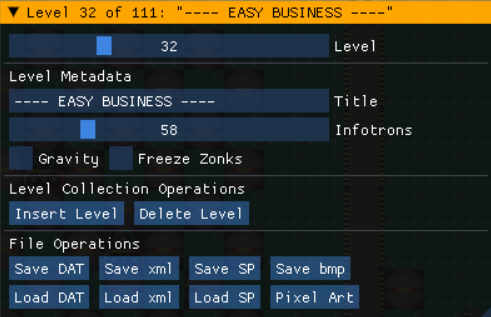
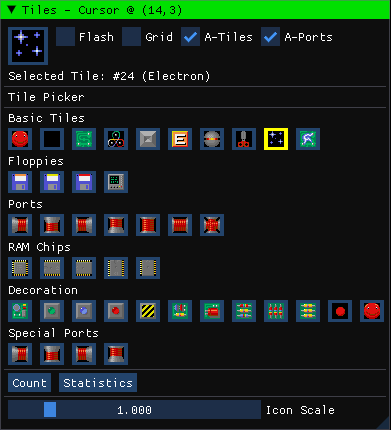
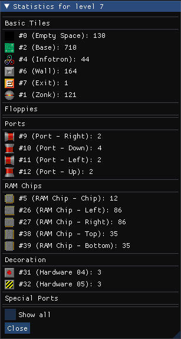
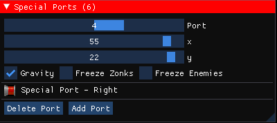
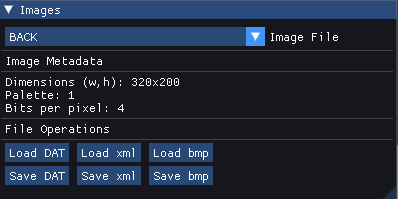
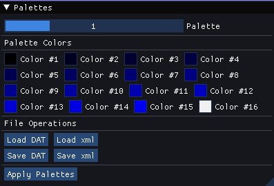
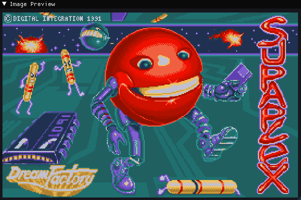
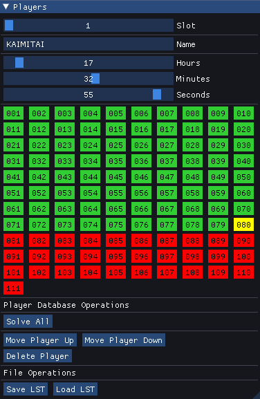
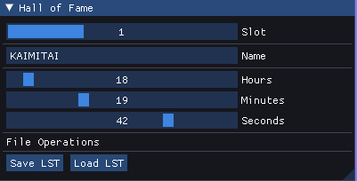

Thank you for checking out Superplexed. With this tool you will be able to create and alter levels for Supaplex, as well as - with the help of an external bmp file editor - modify the graphics in the game. Check out the various sections of this document for an explanation of the program's functionality.
In order to use the level editor efficiently, it is recommended to read the section on keyboard shortcuts.
This editor will let you edit the game data for Supaplex levelsets (LEVELS.DAT/LEVELS.Dxx), as well as the game's graphics and palettes. Included with the editor is the latest version of Supaplex for DOS, and starting the program out of the box will load these files. See the configuration section for how to alter files in other locations.
To play the game, the original executable and game data are included, but a modern source port can be a good alternative.
When the editor starts successfully, it will tell you which configuration is loaded, which directory it uses as the working directory, and which levelset file was loaded. If LEVELS.DAT cannot be found, the application will initialize a levelset with one empty level.
Some files need to be in the project folder for the application to start at all. These are the following graphics files: FIXED.DAT, MOVING.DAT and PALETTES.DAT. The application needs these files to generate its graphics.
When opening the editor, the program looks for a file spconfig.xml in the same directory as the executable. This is a configuration XML which lets you set the project folder - the folder from which files will be read and written to.
By default the file points to the gamedata folder which ships with the editor. If spconfig.xml cannot be found, the project folder will be the same as the executable folder.
The configuration is loaded when the program starts, but can be reloaded during runtime if you want to work in a different location.
The Main Window is present in all editor modes, and contain the following sections:
- Editor Mode dropdown: Lets you choose if you want to edit levels, graphics or savefiles.
- Levelset File dropdown: Lets you choose the context for saving and loading files. Only relevant if you are working on different levelsets in the same folder. The default levelset is LEVELS.DAT, but other possible names are LEVELS.Dxx where xx is a number from 00 to 99. This is in line with how the latest SpeedFix version of Supaplex handles custom levelsets.
- Refresh File List button: Will scan the project folder for levelsets, and repopulat the dropdown for levelset files.
- Reload Configuration button: Reloads spconfig.xml if you want to change project folder during runtime.
- Output Messages: A running list of user messages generated by the editor.
In level editing mode, the following sub-windows will be available:
- Level slidebar: The current level in the levelset being edited.
- Title: The level's title. When editing the title, the editor will ensure you are only using characters that can be rendered in the game. (see images CHARS8 and CHARS6)
- #Infotrons: The number of infotrons required to solve the level. If set to 0, the required number will be all Infotrons placed in the level
- Gravity checkbox: Whether the level starts with gravity turned on
- Freeze Zonks: Whether the level starts with Zonks frozen
- Insert Level button: Will add a new empty level after the current one. If Shift is held, the level will be inserted before the current one.
- Delete Level: Will erase the current level from the levelset. Hold Ctrl to use
- Save DAT: Will save the levelset to LEVELS.DAT, or LEVELS.Dxx in the case of an other levelset.
- Load DAT: Will load the levelset. Hold Ctrl to use this button
- Save/Load xml: Will save or load the current level as an xml file. Hold shift to save/load all levels. Hold Ctrl to load.
- Save/Load SP: Will save or load the current level as an SP file. Hold shift to save/load all levels. Hold Ctrl to load.
- Save bmp: Will save the current level as a 256-color bmp image. Hold shift to save all levels. Output bmp files will indicate medatada properties for the level itself (gravity and freeze zonks), as well as for the special ports - UNLESS the animate ports checkbox is disabled.

The tile picker window will let you choose a tile to be used for drawing and filling. The currently selected tile is shown at the top, along with its description. The selected tile in the tile picker will have a yellow outline. All tiles also have a tooltip for its description.
- Flash checkbox: Will flash the currently selected tile on the gameboard
- Grid checkbox: Shows gridlines
- A-Tiles checkbox: Animate tiles
- A-Ports checkbox: Animate special ports
- Count button: Will count instances of the selected tile in the current level. Hold Shift to count for the whole levelset
- Statistics button: Will count all instances for all tiles in the current level and present it in a new window. Hold Shift to run statistics on the whole levelset.
- Icon Scale slidebar: Set the size of the tile picker icons

- Show all checkbox: Show tiles which have a count of 0
- Close button: Closes the statistics window

A level can have up to ten special ports. These can be configured in the Special Ports-subwindow. Special port properties are represented visually on the gameboard, special ports are automatically set when using the tile picker, and special port properties can be set using keyboard keys 1-3. This window is therefore rarely necessary to use.
- Port slider: Select the current special port
- x slider: x-position of the port
- y slider: y-position of the port
- Gravity checkbox: Whether passing through the port enables gravity
- Freeze Zonks checkbox: Whether passing through the port freezes Zonks
- Freeze Enemies checkbox: Whether passing through the port freezes enemies
- Delete Port: Erases selected special port
- Add port: Inserts a special port at the cursor location
The Special Ports subwindow will also show which tile is used at the port's location, or give a warning if the tile is not a special port at all.
Internal Application Graphics
- F: Flashed tile, when flash is enabled in the tile picker
- G: Enable gravity (special port property): red for off and green for on
- Z: Freeze Zonks (special port property): red for off and green for on
- E: Freeze enemies (special port property): red for off and green for on
- Exclamation marks, red: A tile has a special port, but is not a special port tile
- Exclamation marks, yellow: A tile is a special port tile, but no special port is configured there. Can be legitimate use if you override the graphics and make special ports look different to regular ports.
The tile selection rectangle is yellow, and the currently selected special port has a blue outline
Mouse functions for board grid:
Left click the board grid to select a tile. If a special port is present there, it will be selected too
Shift + Left click the board grid to make a selection rectangle
G + Left click the board grid to move a special port to a new location
Ctrl + Left click the board grid to set the selected tile picker tile to be the clicked board tile ("color picker")
Right click the board grid to "paint", using the Tile Picker type
Ctrl + Right click will "fill", using the Tile Picker type
Mousehweel up and down will scroll the board left or right, hold Ctrl for faster scrolling
Shift + Mousehweel up and down will scroll between levels
Keyboard Shortcuts for board grid: ("cursor" here means the selected board tile)
Ctrl+C - Copy selection to clipboard
Ctrl+V - Paste clipboard at cursor (if clipboard fits)
Ctrl+X - Cut selection
Delete - Clear selection, hold G to only delete special ports
Shift+V - Show where clipboard would be pasted, if using Ctrl+V (if clipboard fits)
Ctrl+A - Select all (whole board)
Arrow keys left/right - Move board view (hold Ctrl for faster panning)
Arrow keys up/down - Go to next/previous level in set (hold Ctrl for +/-10)
1 - Toggle selected special port's gravity attribute
2 - Toggle selected special port's Zonks attribute
3 - Toggle selected special port's enemies attribute
F - Flip selection around vertical axis (hold shift to flip around horizontal axis)
R - Rotate clipboard clockwise 90 degrees (hold Shift to rotate counter-clockwise)
Ctrl+S - Save DAT/Dxx
Home/End - Go to first/last board
Ctrl+B: Apply a wall border to the current level
Ctrl+Z: Undo
Ctrl+Y: Redo
Tab: Select next special port (wraps around at end), hold Shift to cycle backward
Escape: Clear selection rectangle
Flipping a selection or rotating the clipboard, will transform pipes and ram chips accordingly. For example, an upward facing port will be transformed into a downward facing port when flipping a selection around its horizontal axis.
Note also that copying and pasting will ignore the player start position which is not modeled as a tile in the editor. Special port properties will also be lost under copy/paste/undo and redo operations.
The second editing mode is for graphics. When enabled, the following sub-windows will be available:
- Image File dropdown: The graphics DAT file to view/edit
- Load/Save DAT/xml/bmp buttons: Save or load the image from disk. Only DAT files will be used by Supaplex, but you can convert from bmp
Exported bmp files will be 256-colors, even though the palette in Supaplex is only 16 colors. The first 16 colors of the bmp palette will be the game colors, while the rest will be all black. When changing graphics, try to use the same palette as the output files. Colors in a bmp file that do not match a Supaplex palette color will be recolored using a nearest-color scheme. When editing graphics, try to use an image editor that does not silently change your palette.

- Palette slider: The palette to view/edit
- The 16 colors of the palette can be changed using the color pickers, which become available when a palette color is clicked
- Load/Save DAT/xml buttons: Save or load the palettes from disk. Only PALETTES.DAT will be used by Supaplex
- Apply Palettes button: Will apply your palette to all currently open images using it
The Supaplex palette can only hold 16 values per color-component, so what you see in the screen will not be 100% accurate before you apply the palettes.
Only the two first entries of the palettes are in use in the game as far as I know. Some images use a fixed palette which cannot be changed by the editor, as this data is probably stored in the Supaplex executable itself. The Image-subwindow will show metadata for all images, including which palette it uses. This metadata cannot be changed.

The Image Preview-window will just show the selected image, if it has been loaded.
A levelset will have its own savefiles. The default levelset uses PLAYER.LST to contain a database of up to 20 players and their progress in the game, as well as a file HALLFAME.LST for the top three fastest solvers of the whole game. For levelsets other than the default one, these files will be called PLAYER.Lxx and HALLFAME.Lxx respectively, where xx is a 2-digit number.
The sub-windows of the Savefiles editing mode are as follows:
- Slot slider: Selected player in the database
- Name textbos: Name of selected player
- Hours, Minutes, Seconds sliders: Time the player has spent playing
- Solve All button: Mark all levels as solved
- Move Player Up/Down button: Move the selected player's position in the database
- Delete Player button: Remove the player from the database
- Save/Load LST button: Load or save LST/Lxx-file to disk
Click on a level number to toggle its status between unsolved (red), solved (green) and skipped (blue). The first unsolved level is marked in yellow, just like it would be in-game.

The Hall of Fame functions in much the same way, but it has only three slots, and no progress information - as users who end up in the Hall of Fame need to complete all levels.
The XMLs for palettes store the 4 game palettes in order, each of which has 16 individual colors. The rgb-components go from 0-15. I do not know what the fourth color component, which I have called "a" in the xml, signifies - but it can be edited via xml imports.
The XMLs for images store their pixel data row by row, from left to right. Each of these point to an element in the palette, and can thus assume any value from 0 to 15. Some images have an attribute "extra_bytes" in their header, which we tack onto the resultant DAT file to make it 100% identical with the original. What this extra byte is used for, if anything, I do not know. The header attribute "image_type" is "planar" for 16-color images, and "binary" for the font bitmaps, which are monochrome.
The level file XMLs contain the tilemap row by row, going from left to right. The tile numbers go from 0 to 40. Other header attributes include player start, level title, the freeze zonks and the enable gravity attributes.
Special ports, if any, come in their own section of the level file XML - and contain for each port its position, and 3 attributes.
Other header attributes are speedfix_version (1 byte), unknown bytes (4 bytes) and speedfix_demo_bytes (also 4 bytes). These are values which can be used by SpeedFix, but are not editable via the GUI.
Some level XMLs will also contain a secion called solution_bytes. These are extra bytes tacked onto the end of a level, usually coming from a stand-alone SP-file, which describe a way to solve the level. We retain the information but have no way of editing them outside the XML files. We keep the information so it is not lost when saving back to SP or XML. When saving to levelset DAT-files, this information can not be included there.
Thanks to the good folks at Supaplex Online for keeping Supaplex alive, and for providing me with information in their Discord channel.
Program written in C++20, using the following external libraries:
Dear ImGui
pugixml
SDL2 (2.24.0)
Apart from fixing bugs as they are discovered, the following ideas are possible extensions in the future:
- Show more informational and error messages in the application
- Add a help/quickstart screen in the application
- Clean up the code, and reduce wasted cycles :)
- Improve special port support, keep their properties when doing copy/paste/undo/redo
- Make it easier to load individual files rather than see everything in the context of levelsets
If the program does not start at all, check the file sp_errors.log which will be created when an unhandled exception occurs. Usually this will be due to an invalid input file (xml/dat/SP), or invalid project_directory in the config xml. The application requires that FIXED.DAT, MOVING.DAT and PALETTES.DAT be present in the project folder.
If Windows gives you a message that the program cannot be started, make sure you have the x64 Visual C++ Redistributables. This should be part of most Windows installations by default, but can also be found at Microsoft Support Visual C++ downloads.
If the edited graphics look terrible, try to use a graphics editor that does not change the palettes of the images without warning. You can test the bmp importer by loading DAT files, exporting them to bmp - then importing them again and saving back to DAT. This should give you back the identical DAT files you started with. (unless two palette entries point to the same color, in which case the byte difference should not have any visual difference)
For feedback, suggestions, bug reports and questions, the author (Kai E. Frøland aka "kaimitai") can be reached via email, Threema or GitHub.